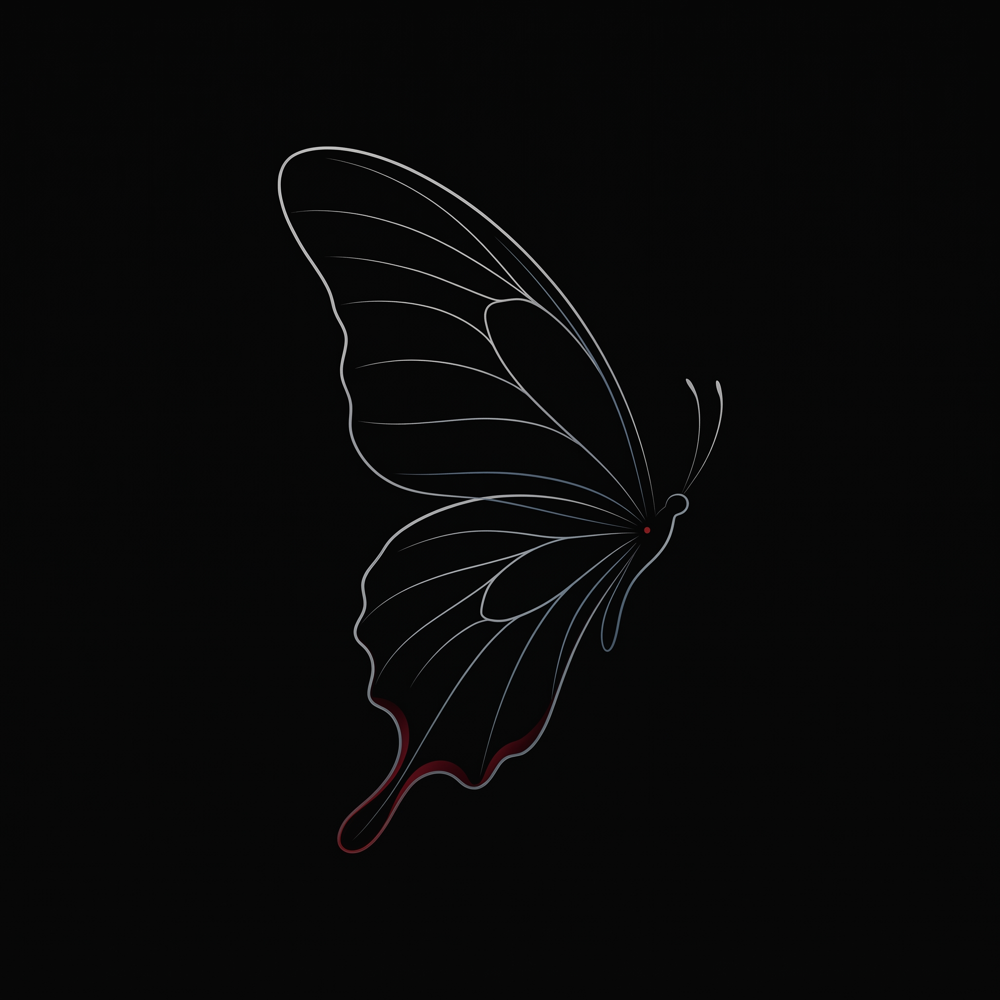

Antologi Jeda & Kehampaan
Story of Toqu
,,
ditulis oleh
komadua.toqu
Arc I — Kehampaan
Arc II — Terkunci
Arc III — Terkunci
Kehampaan yang Menyala Pelan
Dua puluh fragmen kehidupan yang terhenti di tengah kalimat.
← Kembali ke Awal
Salin Kutipan
Kirim Catatan ke WhatsApp ↗